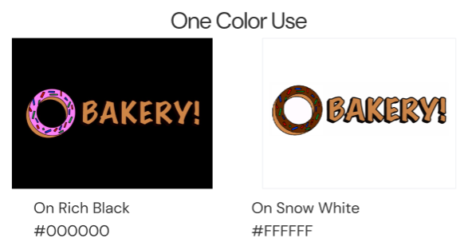
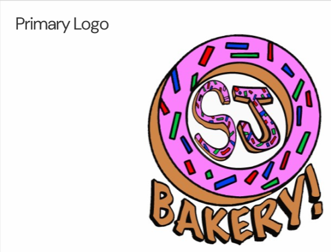
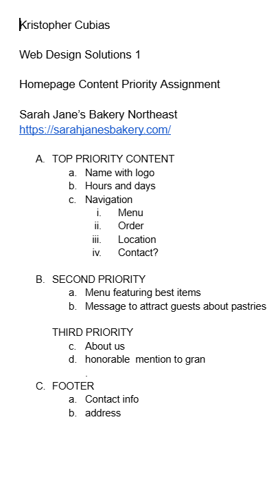

Web Design Solution 1
Kristopher Cubias
In this course, I redesigned a small-business website. This is the site “before” my redesigns
First, I created a new style guide and branding




Next, I reviewed the content of the website and created a prioritized list of homepage content. This UX process is faster than a complete redesign, but it can be helpful to orginize existing content and improve the site’s usability

Finally, I produced my redesigns using four popular website builders: Carrd, SquareSpace, WordPress and Webflow. I learned about the capabilities of each of these platforms and gained hands-on experience